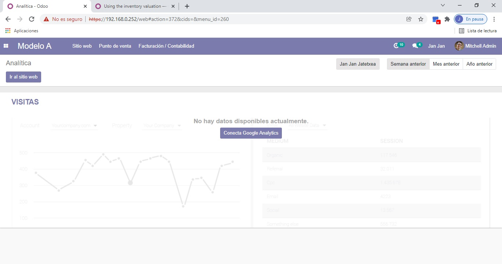
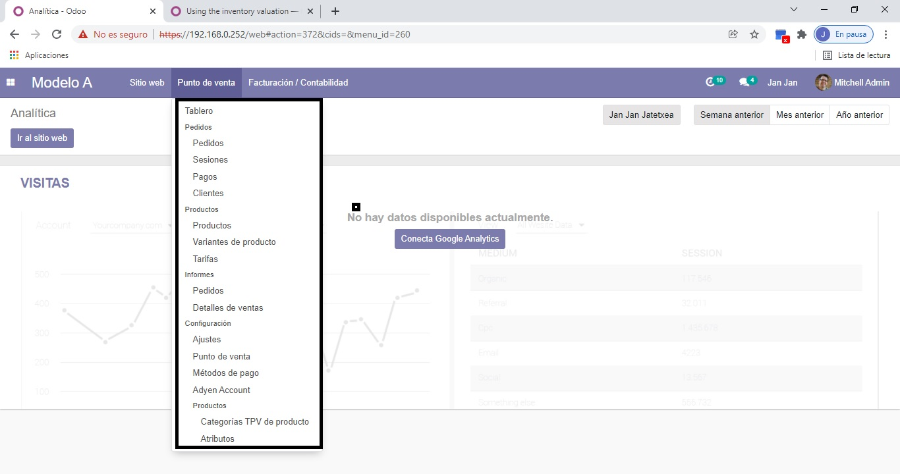
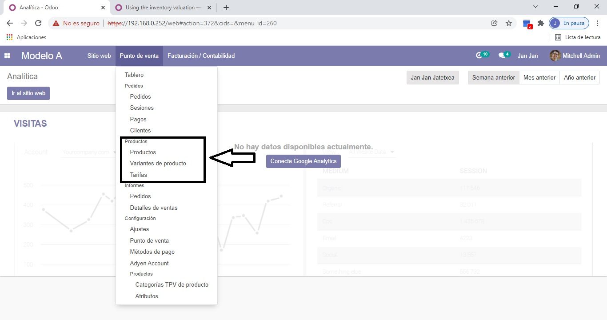
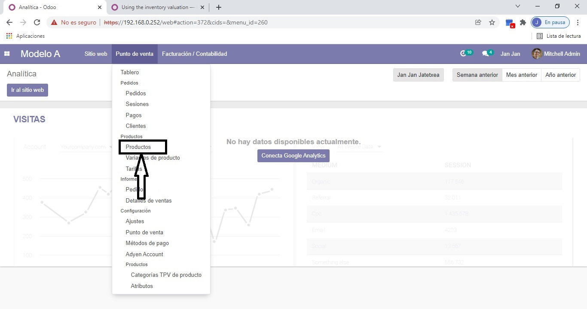
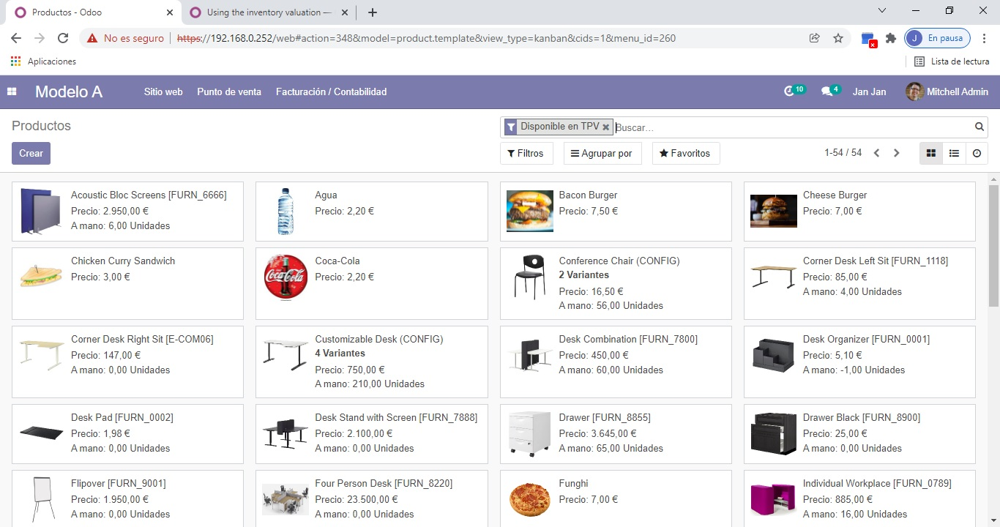
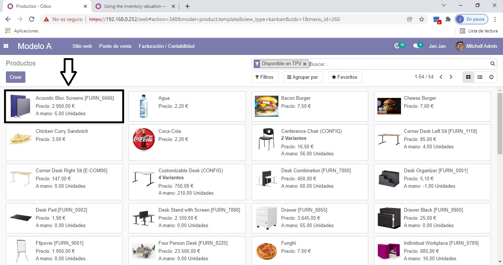

Acceso inicial al sistema
Lo primero que debemos hacer es situarnos en la página principal de la web, la cual podemos ver en la imagen. Desde aquí podremos acceder al apartado que nos interesa para la valoración de inventario.

Navegación al punto de venta
Una vez ya en la página principal nos dirigiremos al apartado donde pone "Punto de Venta". En el desplegable de este apartado encontraremos el subapartado que nos interesa.

Sección de productos
Como la valoración de inventario se hace en base al producto, tiene sentido que el subapartado en el que vamos a centrarnos para obtener esta información vaya a ser en la que pone "Productos" (donde indica en la imagen).

Acceso al inventario
Concretamente para realizar la valoración de inventario en el subapartado "Productos" veremos que agrupa otros tres miniapartados, de estos apartados nos vuelve a interesar el que se llama "Productos" (donde indica la imagen).

Vista del inventario
Esto es lo que nos debería aparecer en pantalla una vez hemos realizado todos los pasos que hemos ido siguiendo. Esto sería el inventario de productos que tenemos en la empresa, su precio y qué cantidad hay disponible ahora mismo.

Ejemplo de producto específico
En este caso tenemos un "Acoustic Bloc Screens", que sería uno de los productos que vendemos. Entre la información que se nos ofrece en este inventario podemos comprobar:
- Precio de venta: 2.950 euros
- Cantidad disponible: 6 unidades (al momento actual)
Si se realizan compras o ventas de productos, las cantidades se actualizan automáticamente, lo cual hace que la disponibilidad sea real.
